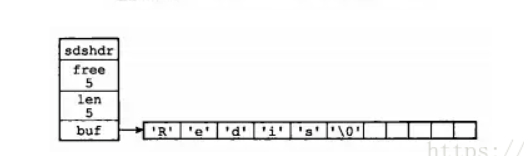

# Redis
一 安装gcc：需要安装gcc 才能使用make编译
yum -y install gcc
yum -y install gcc-c++
二 编译：在redis解压所在目录下使用make编译
cd redis-4.0.8
make
make && make install
三 安装：编译好了需要安装 安装目录为/usr/local/redis-5.0.8
make PREFIX=/usr/local/redis-5.0.8 install
四：如果没有配置文件，去官网下载
http://download.redis.io/redis-stable/redis.conf
五：配置文件修改
bind 127.0.0.1改为 bind 0.0.0.0或者 # bind 127.0.0.1（注释掉即可）
protected-mode no //关闭保护模式
appendonly yes //aof持久化 默认开启rdb持久化
aof-use-rdb-preamble yes // 混合模式持久化
requirepass 123456 //密码
daemonize yes //后台启动
logfile //日志位置
maxmemory-policy allkeys-lru //设置过期淘汰（无需修改）
...根据需要修改
cluster-enabled yes #开启cluster，去掉注释
supervised no
cluster-config-file /usr/local/redis1/etc/nodes-6379.conf #自动生成
//备注 如果加上了密码那么从属节点再配置的时候也要加上密码
masterauth 123456
// 哨兵模式的时候也要 加上验证密码
sentinel auth-pass mymaster 123456
六：进入/usr/local/redis/bin目录 启动 --raw value才能显示中文
./redis-server redis.conf
./redis-cli -a 123456 --raw
# 以挂载启动
需要注释daemonize 或者 改成 no
#daemonize no //后台启动
如果有密码需要添加 --requirepass "123456"
docker run -p 6379:6379 --name redis -v /usr/local/docker/redis/conf/redis.conf:/etc/redis/redis.conf -v /usr/local/docker/redis/data:/data -d redis redis-server /etc/redis/redis.conf --requirepass "123456" --appendonly yes
docker run -p 6379:6379 --name redis -v /home/data/redis/redis.conf:/etc/redis/redis.conf -v /home/data/redis/data:/data -d redis redis-server /etc/redis/redis.conf --requirepass "123456" --appendonly yes
127.0.0.1:6379> set a 123
(error) NOAUTH Authentication required. //请输入密码
127.0.0.1:6379> auth 密码
# Redis 基本数据类型介绍
字符串（string），列表（list），集合（set），有序集合（zset）以及哈希（hash）
# redisObject
在redis中每个value都是以一个redisObject结构来表示，如下：
type就是指这个对象的数据类型，即我们平常所认知的redis的五种数据类型，可以通过TYPE命令查看一个对象的数据类型
typedef struct redisObject{
//类型
unsigned type:4; //
//编码
unsigned encoding:4;
//指向底层数据结构的指针
void *ptr；
//引用计数器
int refCount；
//最后一次的访问时间
unsigned lru:
}
127.0.0.1:6379> set a 123
OK
127.0.0.1:6379> type a
string
127.0.0.1:6379> hmset b name jack age 12
OK
127.0.0.1:6379> type b
hash
127.0.0.1:6379> lpush c 1 2 3
(integer) 3
127.0.0.1:6379> type c
list
127.0.0.1:6379> sadd d 1 2 3
(integer) 3
127.0.0.1:6379> type d
set
127.0.0.1:6379> zadd e 2 a 3 b
(integer) 2
127.0.0.1:6379> type e
zset
127.0.0.1:6379>
lru： 最后一次访问该对象的时间，可以通过Object idletime查看当前时间距离该键的lru的时间，即空转时间如下：
127.0.0.1:6379> set cbd 123
OK
127.0.0.1:6379> object idletime cbd
(integer) 90
127.0.0.1:6379> object idletime cbd
(integer) 95
127.0.0.1:6379> object idletime cbd
(integer) 98
127.0.0.1:6379> get cbd //访问了该键，因此lru重置
"123"
127.0.0.1:6379> object idletime cbd
(integer) 3
127.0.0.1:6379>
refCount: 引用计数器，当创建一个对象的时间便将它的值初始化为1，当它被其它程序引用之时则加1，不再被引用则减1，当它的引用计数值变为0时，对象所占用的内存就会被释放。因此它主要有两个用途，内存回收的标志以及用于对象共享。 对象共享：当新建的两个或多个键都是整数值并且相同时，则它们的键会共享这一个值对象，这样可以减少内存的分配和回收，可以用OBJECT REFCOUNT查看引用情况，如下：
127.0.0.1:6379> set first 123
OK
127.0.0.1:6379> OBJECT refcount first
(integer) 1
127.0.0.1:6379> set second 123
OK
127.0.0.1:6379> OBJECT refcount second
(integer) 2
127.0.0.1:6379> OBJECT refcount first
(integer) 2
127.0.0.1:6379>
# 字符串（string）
string 是 redis 最基本的类型，最大上限是1G 字节。你可以理解成与 Memcached 一模一样的类型，一个 key 对应一个 value。
string 类型是二进制安全的。意思是 redis 的 string 可以包含任何数据。比如jpg图片或者序列化的对象。
字符串对象的值底层都是由简单动态字符串实现的,在redis中，它并未使用C语言中的字符串，而是自己实现了一种叫做SDS的数据结构它的结构表示如下：
struct sdshdr{
//记录buf数组中已使用字节的长度
int len;
//记录buf数组中剩余空间的长度
int free;
//字节数组，用于存储字符串
char buf[];
};

SDS拼接:
当C字符串进行拼接之时，如果未事先对当前字符串的空间进行调整，则可能会导致当前字符串的数据溢出，导致拼接过来的字符串内容被意外的修改，而SDS在拼接之前会进行自动的调整和扩展；减少内存分配次数，在SDS拼接发生以后，如果此时的len小于1MB则它会多分配和len大小相同的未使用空间，用free表示，如果大于1MB，则会分配1MB的为使用空间；惰性空间释放，当字符串进行缩短的时候，程序并不会立即回收空间（也可以调用API立即释放），而是记录到free之中，以便于后序拼接的使用。
编码： 字符串对象的编码可以是int、raw或者embstr。其中int表示整型的值，embstr表示小于等于39字节的字符串值，剩余的均用raw表示，并且int和embstr都是只读的，一旦发生了append拼接操作，即会转换为raw。如下：
127.0.0.1:6379> set age 12
OK
127.0.0.1:6379> Object encoding age
"int"
127.0.0.1:6379> APPEND age 3
(integer) 3
127.0.0.1:6379> Object encoding age
"raw"
127.0.0.1:6379> set name jack
OK
127.0.0.1:6379> Object encoding name
"embstr"
127.0.0.1:6379> APPEND name ja
(integer) 6
127.0.0.1:6379> get name
"jackja"
127.0.0.1:6379> Object encoding name
"raw"
字符串的基本操作------m:批量 nx:根据是否存在 ex:有效期 rang:范围
set get--------基本操作
设置key 对应的值为string 类型的value。
127.0.0.1:6379> set name zhu
OK
127.0.0.1:6379> get name
"zhu"
setnx--------根据是否存在key而创建
设置key 对应的值为string 类型的value。如果key 已经存在，返回0，nx 是not exist 的意思。成功返回1
127.0.0.1:6379> setnx name zhuln
(integer) 0
127.0.0.1:6379> get name
"zhu"
setex--------设置有效期
设置key 对应的值为string 类型的value，并指定此键值对应的有效期。例如我们添加一个whk= good 的键值对，并指定它的有效期是10 秒,如果不设置有效期会报错
127.0.0.1:6379> setex whk 10 good
OK
127.0.0.1:6379> get whk
"good"
//10s--------------
127.0.0.1:6379> get whk
(nil)
setrange--------替换字符串的某部分
设置指定key 的value 值的子字符串。例如我们希望替换name某部分字符：
127.0.0.1:6379> set name whk@qq.com
OK
127.0.0.1:6379> get name
"whk@qq.com"
127.0.0.1:6379> setrange name 4 126.com
(integer) 11
127.0.0.1:6379> get name
"whk@126.com"
其中4是指从下标为4（包含4）的字符开始替换，下标从0开始。
mset--------批量设置多个字符串的值
mget-------批量获取多个字符串的值 一次获取多个key 的值，如果对应key 不存在，则对应返回nil。
一次设置多个key 的值，成功返回ok 表示所有的值都设置了，失败返回0 表示没有任何值被设置。
127.0.0.1:6379> mset num1 12 num2 34 num3 56
OK
127.0.0.1:6379> mget num1 num2 num3 num4 num5
"12"
"34"
"56"
(nil)
(nil)
msetnx--------批量设置多个字符串的值，只有不存在的字符串可以设置
一次设置多个key 的值，成功返回ok 表示所有的值都设置了，失败返回0 表示没有任何值被设置，但是不会覆盖已经存在的key。
127.0.0.1:6379> msetnx num3 55 num4 78
(integer) 0
127.0.0.1:6379> get num4
(nil)
127.0.0.1:6379> get num3
"56"
getset--------设置key完了立刻查看历史的key值
设置key 的值，并返回key 的旧值。
127.0.0.1:6379> get name
"whk@126.com"
127.0.0.1:6379> getset name whk@qq.com
"whk@126.com"
127.0.0.1:6379> get name
"whk@qq.com"
getrange--------获取指定范围的字符串，可以从左边也可以从右边开始
获取指定key 的value 值的子字符串，左下标从0开始，右下标从-1开始，当下标超出字符串长度时，将默认为是同方向的最大下标。
127.0.0.1:6379> get name
"whk@qq.com"
127.0.0.1:6379> getrange name 0 4
"whk@q"
127.0.0.1:6379> getrange name -1 -5
""
127.0.0.1:6379> getrange name -5 -1
"q.com"
incr--------将 key 中储存的数字值增
decr--------对key 的值做的是减一操作，decr 一个不存在key，则设置key 为-1
将 key 中储存的数字值增一。
127.0.0.1:6379> get age
"10"
127.0.0.1:6379> incr age
(integer) 11
127.0.0.1:6379> get age
"11"
incrby--------将 key 中储存的数字值增指定的值,不存在会创建并默认为0
decrby-------同decr，减指定值，可为负值。
加指定值 ，key 不存在时候会设置key，并认为原来的value 是 0
127.0.0.1:6379> get age
"11"
127.0.0.1:6379> incrby age 5
(integer) 16
127.0.0.1:6379> get age
"16"
127.0.0.1:6379> incrby age1 5
(integer) 5
127.0.0.1:6379> get age1
"5"
append--------追加并返回新字符串值的长度
给指定key 的字符串值追加value,返回新字符串值的长度。
127.0.0.1:6379> get name
"whk@qq.com"
127.0.0.1:6379> append name .china
(integer) 16
127.0.0.1:6379> get name
"whk@qq.com.china"
strlen--------取指定key 的value 值的长度。
取指定key 的value 值的长度。
127.0.0.1:6379> get name
"whk@qq.com.china"
127.0.0.1:6379> strlen name
(integer) 16
127.0.0.1:6379> strlen age1
(integer) 2
127.0.0.1:6379> get age
"16"
# 列表（list）
list 是一个链表结构，简单的字符串列表，按照插入顺序排序，链表的最大长度是(2的32 次方)。主要功能是push、pop、获取一个范围的所有值等等，操作中key 可以理解为链表的名字。
链表提供了节点重排以及节点顺序访问的能力，redis中的列表对象主要是由压缩列表和双端链表实现。
双端链表（linkedlist）结构如下：
type struct list{
//表头节点
listNode *head;
//表尾节点
listNode *tail;
//包含的节点总数
unsigned long len;
//一些操作函数 dup free match...
};

其中每个节点都有一个prev指针和一个next指针，而节点中的value则是列表对象具体的值。
压缩列表（ziplist）结构如下：
type struct ziplist{
//整个压缩列表的字节数
uint32_t zlbytes;
//记录压缩列表尾节点到头结点的字节数，直接可以求节点的地址
uint32_t zltail_offset;
//记录了节点数，有多种类型，默认如下
uint16_t zllength;
//节点
列表节点 entryX;

而每个列表节点中主要包括以下几项：previous_entry_length，记录了压缩列表中前一节点的字节长度，当小于254字节时，它的长度为1字节，当大于254字节时，长度为5字节且后4字节保存真正的长度，用于表尾向表头遍历；content，节点所存储的内容，可以是一个字节数组或者整数；encoding，记录content属性中所保存的数据类型以及长度。
编码： 当列表对象所存储的字符串元素长度小于64字节并且元素数量小于512个时，使用ziplist编码，否则使用linkedlist编码，如下：
127.0.0.1:6379> rpush zip "hello" "world"
(integer) 2
127.0.0.1:6379> OBJECT encoding zip
"ziplist"
127.0.0.1:6379> rpush zip "fffffffffffffffffffffzzzzzzzzzzzzzzzzzzzzzzzzzzzzzkkkkkkkkkkkkkkkkkkkkkkkkkcccccccccc"
(integer) 3
127.0.0.1:6379> OBJECT encoding zip
"linkedlist"
127.0.0.1:6379>
列表的基本操作------- l:li/左侧 r:右侧
lpush--------在左侧添加
在key 对应list 的头部添加字符串元素(left)
127.0.0.1:6379> lrange testlist 0 0
1) "word"
127.0.0.1:6379> lpush testlist "hello"
(integer) 2
127.0.0.1:6379> lrange testlist 0 1
1) "hello"
2) "world"
rpush--------在右侧添加
在key 对应list 的尾部添加字符串元素(right)
127.0.0.1:6379> lrange testlist 0 1
1) "hello"
2) "word"
127.0.0.1:6379> rpush testlist "!"
(integer) 3
127.0.0.1:6379> lrange testlist 0 2
1) "hello"
2) "word"
3) "!"
linsert--------特定位置之前或之后添加字符串元素
在key 对应list 的特定位置之前或之后添加字符串元素
LINSERT key BEFORE|AFTER pivot value
127.0.0.1:6379> linsert testlist before "word" "beautiful"
(integer) 4
127.0.0.1:6379> lrange testlist 0 3
1) "hello"
2) "beautiful"
3) "word"
4) "!"
lset--------修改指定下标的元素值(下标从0 开始)
设置list 中指定下标的元素值(下标从0 开始)
127.0.0.1:6379> lrange testlist 0 3
1) "hello"
2) "beautiful"
3) "word"
4) "!"
127.0.0.1:6379> lset testlist 0 "Say"
OK
127.0.0.1:6379> lrange testlist 0 4
1) "Say"
2) "beautiful"
3) "word"
4) "!"
lrem--------删除指定元素值
从key 对应list 中删除count 个和value 相同的元素。count>0 时，按从头到尾的顺序删除;count<0 时，按从尾到头的顺序删除;count<0 时，按从尾到头的顺序删除。
127.0.0.1:6379> lrange testlist 0 6
1) "2010"
2) "Say"
3) "beautiful"
4) "word"
5) "2010"
6) "2010"
127.0.0.1:6379> lrem testlist 2 "2010"
(integer) 2
127.0.0.1:6379> lrange testlist 0 6
1) "Say"
2) "beautiful"
3) "word"
4) "2010"
ltrim--------保留指定下标 的值范围内的数据
保留指定key 的值范围内的数据
127.0.0.1:6379> lrange testlist 0 3
1) "Say"
2) "beautiful"
3) "word"
4) "2010"
127.0.0.1:6379> ltrim testlist 0 2
OK
127.0.0.1:6379> lrange testlist 0 3
1) "Say"
2) "beautiful"
3) "word"
lpop--------从list 的头部删除元素，并返回删除元素
从list 的头部删除元素，并返回删除元素
127.0.0.1:6379> lrange testlist 0 3
1) "Say"
2) "beautiful"
3) "word"
127.0.0.1:6379> lpop testlist
"Say"
127.0.0.1:6379> lrange testlist 0 3
1) "beautiful"
2) "word"
rpop--------从list 的尾部删除元素，并返回删除元素
从list 的尾部删除元素，并返回删除元素
127.0.0.1:6379> lrange testlist 0 3
1) "beautiful"
2) "word"
127.0.0.1:6379> rpop testlist
"word"
127.0.0.1:6379> lrange testlist 0 3
1) "beautiful"
rpoplpush--------从第一个list 的尾部移除元素并添加到第二个list 的头部 （原子性）
从第一个list 的尾部移除元素并添加到第二个list 的头部,最后返回被移除的元素值，整个操作是原子的.如果第一个list 是空或者不存在返回nil
127.0.0.1:6379> lrange testlist 0 3
1) "beautiful"
127.0.0.1:6379> lrange testlist2 0 1
(empty list or set)
127.0.0.1:6379> rpoplpush testlist testlist2
"beautiful"
127.0.0.1:6379> lrange testlist 0 1
(empty list or set)
127.0.0.1:6379> lrange testlist2 0 1
1) "beautiful"
lindex--------返回列表指定位置元素
返回名称为key 的list 中index 位置的元素
127.0.0.1:6379> lrange testlist2 0 1
1) "beautiful"
127.0.0.1:6379> index testlist2 1
(error) ERR unknown command 'index'
127.0.0.1:6379> lindex testlist2 1
(nil)
127.0.0.1:6379> lindex testlist2 0
"beautiful"
llen--------返回列表长度
返回key 对应list 的长度
127.0.0.1:6379> lrange testlist2 0 1
1) "beautiful"
127.0.0.1:6379> llen testlist2
(integer) 1
# 集合（set）
set 是集合，和我们数学中的集合概念相似，对集合的操作有添加删除元素，有对多个集合求交并差等操作，操作中key 理解为集合的名字。集合成员是唯一的，这就意味着集合中不能出现重复的数据。set 元素最大可以包含(2 的32 次方)个元素。
整数集合与字典： 集合对象的编码可以是整数集合（intset）或者字典（hashtable）。
整数集合结构如下：
typedef struct intset{
//编码方式
uint32_t encoding;
//元素数量
uint32_t length;
//存储元素的数组
int8_t contents[];
}
整数集合的每个元素都是contents数组的一个数组项，各个项在数组中按值得大小从小到大有序排列，并且不包含重复的项。contents数组中元素的类型由encoding决定，当新加入元素之时，如果元素的编码大于contents是数组的编码，则会将所有元素的编码升级为新加入元素的编码，然后再插入。编码不会发生降级。
rehash 当哈希表的大小不能满足需求，就可能会有两个或者以上数量的键被分配到了哈希表数组上的同一个索引上，于是就发生冲突（collision），在Redis中解决冲突的办法是链接法[拉链法|链地址法]（separate chaining）。常见的解决hash冲突的方法还有开放定址法,再散列,公共溢出区。
字典的结构如下：
typedef struct dict{
//类型特定函数
dictType *type;
//哈希表 两个，一个用于实时存储，一个用于rehash
dictht ht[2];
//rehash索引 数据迁移时使用
unsigned rehashidx;
}
而哈希表的结构如下：
typedef struct dictht{
//哈希表数组
dictEntry **table;
//哈希表大小
unsigned long size;
//哈希表掩码，总是等于size-1，存储时计算索引值
unsigned long sizemask;
//已有元素数量
unsigned long used;
}

其中键值对都保存在节点dictEntry之中，并且通过拉链法解决哈希冲突，存储时通过MurmurHash算法来计算键的哈希值，能够更好的提供随机分布性且速度也快。扩容时时采用渐进式的rehash，采用分而治之的方法，通过改变rehashidx的值，来一个个将元素移动到ht[1]中，完成以后将ht[1]变为ht[0]，原先的ht[0]变为ht[1]，同时将redhashidx置为-1。
unsigned int murMurHash(const void *key, int len)
{
const unsigned int m = 0x5bd1e995;
const int r = 24;
const int seed = 97;
unsigned int h = seed ^ len;
// Mix 4 bytes at a time into the hash
const unsigned char *data = (const unsigned char *)key;
while(len >= 4)
{
unsigned int k = *(unsigned int *)data;
k *= m;
k ^= k >> r;
k *= m;
h *= m;
h ^= k;
data += 4;
len -= 4;
}
// Handle the last few bytes of the input array
switch(len)
{
case 3: h ^= data[2] << 16;
case 2: h ^= data[1] << 8;
case 1: h ^= data[0];
h *= m;
};
// Do a few final mixes of the hash to ensure the last few
// bytes are well-incorporated.
h ^= h >> 13;
h *= m;
h ^= h >> 15;
return h;
}
编码： 当集合对象所保存的元素都是整数值且元素数量不超过512个时，使用intset编码，否则使用hashtable编码，如下：
127.0.0.1:6379> sadd cloud 1 2 3 4 5
(integer) 5
127.0.0.1:6379> object encoding cloud
"intset"
127.0.0.1:6379> sadd cloud a b c
(integer) 3
127.0.0.1:6379> object encoding cloud
"hashtable"
集合的基本操作------- add:添加 rem:删除 pop:随机删除 diff:差集 inter:交集 union:并集 store:保存 move:移动
sadd-------向set 中添加元素
向set 中添加元素
127.0.0.1:6379> sadd testset 'Hello'
(integer) 1
127.0.0.1:6379> sadd testset 'everybody'
(integer) 1
127.0.0.1:6379> smembers testset
1) "Hello"
2) "everybody"
srem------- 删除set 中的元素
删除set 中的元素member
127.0.0.1:6379> smembers testset
1) "Hello"
2) "everybody"
127.0.0.1:6379> srem testset 'Hello'
(integer) 1
127.0.0.1:6379> smembers testset
1) "everybody"
spop------- 随机删除set 中一个元素
随机删除set 中一个元素
127.0.0.1:6379> smembers testset
1) "is"
2) "OK"
3) "everybody"
127.0.0.1:6379> spop testset
"is"
127.0.0.1:6379> smembers testset
1) "OK"
2) "everybody"
sdiff------- 返回与第一个key 的差集
返回与第一个key 的差集
127.0.0.1:6379> smembers testset
1) "OK"
2) "everybody"
127.0.0.1:6379> sadd testset1 'OK'
(integer) 1
127.0.0.1:6379> sadd testset1 '!!'
(integer) 1
127.0.0.1:6379> smembers testset1
1) "!!"
2) "OK"
127.0.0.1:6379> sdiff testset testset1
1) "everybody"
127.0.0.1:6379> sdiff testset1 testset
1) "!!"
sdiffstore------- 返回与第一个key 的差集，并将结果存为另一个destination
返回与第一个key 的差集，并将结果存为另一个key
sdffstore destination key key2
127.0.0.1:6379> sdiff testset1 testset
1) "!!"
127.0.0.1:6379> sdiffstore testset2 testset1 testset
(integer) 1
127.0.0.1:6379> smembers testset2
1) "!!"
sinter------- 返回所有给定key 的交集
返回所有给定key 的交集
127.0.0.1:6379> smembers testset
1) "OK"
2) "everybody"
127.0.0.1:6379> smembers testset1
1) "!!"
2) "OK"
127.0.0.1:6379> sinter testset testset1
1) "OK"
127.0.0.1:6379> sdiff testset testset1
1) "everybody"
sinterstore------- 返回所有交集，并将结果存为另一个key
返回所有交集，并将结果存为另一个key
sinterstore destination key key2
127.0.0.1:6379> sinter testset testset1
1) "OK"
127.0.0.1:6379> sdiff testset testset1
1) "everybody"
127.0.0.1:6379> sinterstore testset3 testset testset1
(integer) 1
127.0.0.1:6379> smembers testset3
1) "OK"
sunion------- 返回所有的并集
返回所有的并集
127.0.0.1:6379> smembers testset3
1) "OK"
127.0.0.1:6379> smembers testset2
1) "!!"
127.0.0.1:6379> sunion testset3 testset2
1) "!!"
2) "OK"
sunionstore------- 返回所有并集，并将结果存为另一个key
返回所有并集，并将结果存为另一个key
sunionstore destination key key2
127.0.0.1:6379> sunion testset3 testset2
1) "!!"
2) "OK"
127.0.0.1:6379> sunionstore testset4 testset3 testset2
(integer) 2
127.0.0.1:6379> smembers testset4
1) "!!"
2) "OK"
smove------- 从第一个对应的set 中移除member 并添加到第二个对应set 中
从第一个对应的set 中移除member 并添加到第二个对应set 中
127.0.0.1:6379> smembers testset1
1) "!!"
2) "OK"
127.0.0.1:6379> smembers testset2
1) "!!"
127.0.0.1:6379> smove testset1 testset2 "!!"
(integer) 1
127.0.0.1:6379> smembers testset1
1) "OK"
127.0.0.1:6379> smembers testset2
1) "!!"
scard------- 返回set 的元素个数
返回set 的元素个数
127.0.0.1:6379> smembers testset2
1) "!!"
127.0.0.1:6379> scard testset2
(integer) 1
sismember------- 测试member 是否是set 的元素
测试member 是否是set 的元素
127.0.0.1:6379> smembers testset1
1) "OK"
127.0.0.1:6379> sismember testset1 OK
(integer) 1
127.0.0.1:6379> sismember testset1 ok
(integer) 0
127.0.0.1:6379> sismember testset1 "OK"
(integer) 1
127.0.0.1:6379> sismember testset1 'OK'
(integer) 1
srandmember------- 随机返回set 的一个元素，但是不删除元素
随机返回set 的一个元素，但是不删除元素
127.0.0.1:6379> smembers testset1
1) "OK"
2) "!"
3) "Everybody"
127.0.0.1:6379> srandmember testset1
"!"
127.0.0.1:6379> smembers testset1
1) "OK"
2) "!"
3) "Everybody"
# 有序集合（zset）
有序集合是集合的升级版，不同的是每个元素都会关联一个double类型的分数。redis正是通过分数来为集合中的成员进行从小到大的排序。有序集合的成员是唯一的,但分数(score)却可以重复。
有序集合的编码可以是压缩列表（ziplist）或者跳跃表（skiplist）。 跳跃表的结构如下：
typedef struct zskiplist{
//跳跃表的头结点
zskiplistNode header;
//尾节点
zskiplistNode tail;
//跳跃表中层数最大的节点的层数（不包括头结点）
unsigned long level;
//跳跃表长度（不包括头节点）
unsigned int length;
其中的跳跃表节点结构如下：
typedef struct zskiplistNode{
//后退指针
struct zskiplistNode *backward;
//分值
double score;
//成员对象
robj *obj;
//层
struct zskiplistLevel{
//前进指针
struct zskiplistNode *forward;
//跨度
unsigned int span;
}level[];
};
每个level数组可以包含多个元素，里面存储有指向其他节点（不是下一个）的指针，可以加快访问速度；跨度用于表示两个节点之间的距离，排位时使用；后退指针依次的从后向前访问；分值用于排序；成员是一个指向字符串对象的指针。
编码： 当元素数量小于128个并且所有元素成员的长度都小于64字节之时使用ziplist编码，否则使用skiplist编码，如下：
127.0.0.1:6379> zadd test 2 a 3 b
(integer) 2
127.0.0.1:6379> OBJECT encoding test
"ziplist"
127.0.0.1:6379> zadd test 4 ffffffffffffffffffffffffffffffffffffffffffffffffffffffffqwqqqqqqqqqqqqqqqqqqqqqqqqqqqqqqqqqqqqqqqqqqqqqqqqqqqqqqqqqqqqqqqqqq
(integer) 1
127.0.0.1:6379> OBJECT encoding test
"skiplist"
有序集合的基本操作
zadd-------向zset 中添加元素member，score 用于排序。如果该元素已经存在，则根据score 更新该元素的顺序。
向zset 中添加元素member，score 用于排序。如果该元素已经存在，则根据score 更新该元素的顺序。
127.0.0.1:6379> zadd testzset 1 'one'
(integer) 1
127.0.0.1:6379> zadd testzset 2 'two'
(integer) 1
127.0.0.1:6379> zadd testzset 3 'two'
(integer) 0
127.0.0.1:6379> zrange testzset 0 2
1) "one"
2) "two"
127.0.0.1:6379> zrange testzset 0 2 withscores
1) "one"
2) "1"
3) "two"
4) "3"
zrem-------删除zset 中的元素member
删除zset 中的元素member
127.0.0.1:6379> zrange testzset 0 2 withscores
1) "one"
2) "1"
3) "two"
4) "2"
5) "three"
6) "3"
127.0.0.1:6379> zrem testzset one
(integer) 1
127.0.0.1:6379> zrange testzset 0 2 withscores
1) "two"
2) "2"
3) "three"
4) "3"
zincrby-------
如果zset 中已经存在元素member，则增加该元素的score，new_score=old_score+zincrby_score；否则向集合中添加该元素。
127.0.0.1:6379> zrange testzset 0 2 withscores
1) "two"
2) "2"
3) "three"
4) "3"
127.0.0.1:6379> zincrby testzset 5 "two"
"7"
127.0.0.1:6379> zrange testzset 0 5 withscores
1) "three"
2) "3"
3) "two"
4) "7"
127.0.0.1:6379> zincrby testzset 5 "four"
"5"
127.0.0.1:6379> zrange testzset 0 5 withscores
1) "three"
2) "3"
3) "four"
4) "5"
5) "two"
6) "7"
zrank-------返回某个元素的排名**（按score 从小到大排）**，即下标
返回某个元素的排名（按score 从小到大排），即下标
127.0.0.1:6379> zrange testzset 0 5 withscores
1) "three"
2) "3"
3) "four"
4) "5"
5) "two"
6) "7"
127.0.0.1:6379> zrank testzset "four"
(integer) 1
127.0.0.1:6379> zrank testzset "two"
(integer) 2
127.0.0.1:6379> zrank testzset "three"
(integer) 0
zrevrank-------返回zset中元素的排名 (按score 从大到小排序)，即下标
返回zset中元素的排名(按score 从大到小排序)，即下标
127.0.0.1:6379> zrange testzset 0 5 withscores
1) "three"
2) "3"
3) "four"
4) "5"
5) "two"
6) "7"
127.0.0.1:6379> zrevrank testzset "four"
(integer) 1
127.0.0.1:6379> zrevrank testzset "two"
(integer) 0
127.0.0.1:6379> zrevrank testzset "three"
(integer) 2
zrevrange-------返回**（按score 从大到小排序）** 从start 到end 的所有元素
返回（按score 从大到小排序） 从start 到end 的所有元素
127.0.0.1:6379> zrevrange testzset 0 1 withscores
1) "two"
2) "7"
3) "four"
4) "5"
zrangebyscore-------返回集合中score 在给定区间的元素
返回集合中score 在给定区间的元素
127.0.0.1:6379> zrange testzset 0 2 withscores
1) "three"
2) "3"
3) "four"
4) "5"
5) "two"
6) "7"
127.0.0.1:6379> zrangebyscore testzset 0 5 withscores
1) "three"
2) "3"
3) "four"
4) "5"
zcount-------返回集合中score 在给定区间的数量
返回集合中score 在给定区间的数量
127.0.0.1:6379> zcount testzset 3 5
(integer) 2
zcard-------返回集合中元素个数zcount
返回集合中元素个数
127.0.0.1:6379> zcard testzset
(integer) 3
127.0.0.1:6379> zrange testzset 0 5 withscores
1) "three"
2) "3"
3) "four"
4) "5"
5) "two"
6) "7"
zscore-------返回给定元素对应的score
返回给定元素对应的score
127.0.0.1:6379> zrange testzset 0 5 withscores
1) "three"
2) "3"
3) "four"
4) "5"
5) "two"
6) "7"
127.0.0.1:6379> zscore testzset "three"
"3"
zremrangebyrank-------删除集合中排名在给定区间（下标）的元素
删除集合中排名在给定区间（下标）的元素
127.0.0.1:6379> zrange testzset 0 5 withscores
1) "three"
2) "3"
3) "four"
4) "5"
5) "two"
6) "7"
127.0.0.1:6379> zremrangebyrank testzset 2 2
(integer) 1
127.0.0.1:6379> zrange testzset 0 5 withscores
1) "three"
2) "3"
3) "four"
4) "5"
zremrangebyscore-------删除集合中score 在给定区间的元素
删除集合中score 在给定区间的元素
127.0.0.1:6379> zrange testzset 0 5 withscores
1) "three"
2) "3"
3) "four"
4) "5"
127.0.0.1:6379> zremrangebyscore testzset 3 5
(integer) 2
127.0.0.1:6379> zrange testzset 0 5 withscores
(empty list or set)
# 哈希（hash）
Redis hash 是一个键值(key=>value)对集合。是一个 string 类型的 field 和 value 的映射表，特别适合用于存储对象。
相较于将对象的每个字段存成单个string 类型。将一个对象存储在hash 类型中会占用更少的内存，省内存的原因是新建一个hash 对象时开始是zipmap（又称为small hash）来存储的。当field 或者value的大小超出一定限制后，Redis 会在内部自动将zipmap 替换成正常的hash 实现. 这个限制可以在配置文件中设定： hash-max-zipmap-entries 64 #配置字段最多64 个 hash-max-zipmap-value 512 #配置value 最大为512 字节
哈希对象的编码可以是压缩列表（ziplist）或者字典（hashtable），当哈希对象保存的所有键值对的键和值得长度都小于64字节并且元素数量小于512个时使用ziplist，否则使用hashtable。使用ziplist时，是依次将键和值压入链表之中，两者相邻。使用hashtable是是将键值对存于dictEntry之中。
压缩列表（ziplist）结构如下：
type struct ziplist{
//整个压缩列表的字节数
uint32_t zlbytes;
//记录压缩列表尾节点到头结点的字节数，直接可以求节点的地址
uint32_t zltail_offset;
//记录了节点数，有多种类型，默认如下
uint16_t zllength;
//节点
列表节点 entryX;
而每个列表节点中主要包括以下几项：previous_entry_length，记录了压缩列表中前一节点的字节长度，当小于254字节时，它的长度为1字节，当大于254字节时，长度为5字节且后4字节保存真正的长度，用于表尾向表头遍历；content，节点所存储的内容，可以是一个字节数组或者整数；encoding，记录content属性中所保存的数据类型以及长度。
字典（hashtable）的结构如下：
typedef struct dict{
//类型特定函数
dictType *type;
//哈希表 两个，一个用于实时存储，一个用于rehash
dictht ht[2];
//rehash索引 数据迁移时使用
unsigned rehashidx;
}
而哈希表的结构如下：
typedef struct dictht{
//哈希表数组
dictEntry **table;
//哈希表大小
unsigned long size;
//哈希表掩码，总是等于size-1，存储时计算索引值
unsigned long sizemask;
//已有元素数量
unsigned long used;
}
其中键值对都保存在节点dictEntry之中，并且通过拉链法解决哈希冲突，存储时通过MurmurHash算法来计算键的哈希值，能够更好的提供随机分布性且速度也快。扩容时时采用渐进式的rehash，采用分而治之的方法，通过改变rehashidx的值，来一个个将元素移动到ht[1]中，完成以后将ht[1]变为ht[0]，原先的ht[0]变为ht[1]，同时将redhashidx置为-1。
哈希的基本操作
hset
设置hash field 为指定值，如果key 不存在，则先进行创建
127.0.0.1:6379> hset mytest field1 Hello
(integer) 1
127.0.0.1:6379> hget mytest field1
"Hello"
hsetnx
设置hash field 为指定值，如果key 不存在，则先创建。如果field 已经存在，返回0。
hmset
同时设置hash 的多个field。
hget
获取指定的hash field。
hmget-------批量获取 需要指定属性
获取全部指定的hash filed。
127.0.0.1:6379> hmget mytest field1 field2 field3
1) "Hello"
2) "world"
3) "!"
hincrby--------追加 只能加在int上
指定的hash filed 加上给定值（无hincr操作）。
new_filed=old_filed+hincrby_filed；
127.0.0.1:6379> hset mytest field4 10
(integer) 1
127.0.0.1:6379> hget mytest field4
"10"
127.0.0.1:6379> hincr mytest field4
(error) ERR unknown command 'hincr'
127.0.0.1:6379> hincrby mytest field4 8
(integer) 18
hexists-------
测试指定field 是否存在，存在返回1，不存在返回0。
hlen-------
返回指定hash 的field 数量。
127.0.0.1:6379> hlen mytest
(integer) 5
hdel
删除指定hash 的field 。
127.0.0.1:6379> hlen mytest
(integer) 2
127.0.0.1:6379> hdel mytest field3
(integer) 1
127.0.0.1:6379> hlen mytest
(integer) 1
hkeys
返回hash 的所有field。
127.0.0.1:6379> hkeys mytest
1) "txt1"
127.0.0.1:6379> hset mytest field2 2
(integer) 1
127.0.0.1:6379> hkeys mytest
1) "txt1"
2) "field2"
hvals
返回hash 的所有value值。
127.0.0.1:6379> hvals mytest
1) "Hello"
2) "2"
hgetall
获取某个hash 中全部的filed 及value。
127.0.0.1:6379> hgetall mytest
1) "txt1"
2) "Hello"
3) "field2"
4) "2"
# 清除redis缓存数据
1.查询所有容器
docker ps -a
2.进入redis客户端
docker exec -it xxx（ID） redis-cli
3.清除缓存
flushall 所有数据库
flushdb 当前库
也可以选定数据库清除数据 redis 提供从db0-15 16个数据库
127.0.0.1:6379> auth 密码(Occ2018)
OK
127.0.0.1:6379> select 1
OK
127.0.0.1:6379[1]> flushdb
ok
4.清除指定key
查询所有key：keys *
删除指定key：del xxx（key）
127.0.0.1:6379> keys *
1)"age"
2)"name"
127.0.0.1:6379> del name
(integer) 1
127.0.0.1:6379[1]> keys *
1)"age"